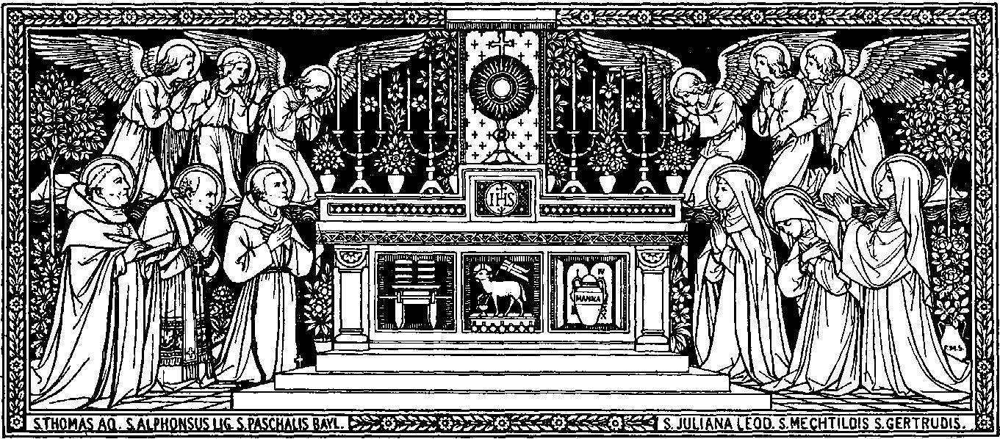

CONSOCIATIO CORDIS IMMACULATI
MISSA SICCA
FOR PRIVATE USE ONLY

The 'missa sicca' devotion is not a substitute for the Mass.
APPENDIX I. PREFACE
The missa sicca was originally a mediaeval devotion which has fallen out of use in the years antecedent and following the Council of Trent. However,
it has experienced a resurgence in some circles, including the Association of the Immaculate Heart, which finds this devotion expedient to enrich the love of
liturgy and devotion to the Blessed Sacrament. This version of the Missa Sicca is based upon the Missal of 1962, the edition of the Roman Rite promulgated
by St. John XXIII.
This form of devotion is not regulated by Traditiones Custodes. However, if read in a group, it is commendable to proclaim the readings in the vernacular.
This devotion can be used in most settings, but it is best used in the pretext of a Holy Hour. Although the preferred language is ecclestiastical Latin,
in accordance with the spirit of the Association of the Immaculate Heart, it may be said in the vernacular, which is provided too.
APPENDIX II. THE PRAYERS
It is commendable to say this short prayer before beginning this devotion:
Aperi, Domine, os meum ad benedicendum nomen sanctum tuum:
munda quoque cor meum ab omnibus vanis, perversis et alienis
cogitationibus; intellectum illumina, affectum inflamma, ut digne,
attente ac devote hoc devotio recitare valeam, et exaudiri merear
ante conspectum divinae Majestatis tuae. Per Christum Dominum
nostrum. Amen.
Open, O Lord, my mouth to bless your holy name;
cleanse my heart from all vain, evil, and wandering thoughts;
enlighten my understanding and kindle my affections; that I
may worthily, attentively, and devoutly say this devotion,
and so deserve to be heard before the presence of your divine
Majesty. Through Christ our Lord. Amen.
Pre-Introit
V: + In nomine Patris, et Filii, et Spiritus Sancti.
V: + In the Name of the Father, and of
the Son, and of the Holy Spirit.
R: Amen.
R: Amen.
V: Introibo ad altare Dei.
V: I will go unto the altar of God.
R: Ad Deum qui laetificat juventutem meam.
R: To God, Who gives joy to my youth.
Ps. 42
(In Passiontide, Psalm 42 is omitted -
continue at +Adjutorium...)
V: Judica me, Deus, et discerne causam meam de
gente non sancta: ab homine iniquo et doloso erue me.
V: Judge me, O God, and distinguish my cause from the unholy nation,
deliver me from the unjust and deceitful man.
R: Quia tu es, Deus, fortitudo mea: quare me repulisti,
et quare tristis incedo, dum affligit me inimicus?
R: For Thou, O God, art my strength, why hast Thou cast me off?
And why do I go about in sadness, while the enemy afflicteth me?
V: Emitte lucem tuam, et veritatem tuam: ipsa me deduxerunt, et adduxerunt in montem
sanctum tuum, et in tabernacula tua.
V: Send forth Thy light and Thy truth: they have conducted
me and brought me unto Thy holy mount, and into Thy tabernacles.
R: Et introibo ad altare Dei: ad Deum qui laetificat juventutem meam.
R: And I will go unto the altar of God: to God, Who gives joy to my youth.
V: Confitebor tibi in cithara, Deus, Deus meus: quare
tristis es, anima mea, et quare conturbas me?
V: I shall praise Thee upon the harp, O God, my God.
Why are you sad, O my soul, and why do you disquiet me?
R: Spera in Deo, quoniam adhuc confitebor illi:
salutare vultus mei, et Deus meus.
R: Hope in God, for I will still praise Him, the
salvation of my countenance, and my God.
V: Gloria Patri, et Filio, et Spiritui Sancto.
V: Glory be to the Father, and to the Son, and to the Holy Spirit.
R: Sicut erat in principio, et nunc, et semper: et in saecula saeculorum. Amen.
R: As it was in the beginning, is now, and ever shall be, world without end. Amen.
V: Introibo ad altare Dei.
V: I will go unto the altar of God.
R: Ad Deum qui laetificat juventutem meam.
R: To God, Who gives joy to my youth.
V: +Adjutorium nostrum in nomine Domini.
V: †Our help is in the name of the Lord.
R: Qui fecit caelum et terram.
R: Who made heaven and earth.
The Confiteor is said all together.
Confiteor Deo omnipotenti, beatae Mariae semper Virgini, beato Michaeli
V: I confess to almighty God, to blessed Mary ever Virgin, to blessed Michael
Archangelo, beato Joanni Baptistae, sanctis Apostolis Petro et Paulo, omnibus
the Archangel, to blessed John the Baptist, to the holy Apostles Peter and Paul, to all
Sanctis, et vobis fratres: quia peccavi nimis cogitatione, verbo, et opere:
the Saints, and to you, brethren, that I have sinned exceedingly in thought, word, and deed:
mea culpa, mea culpa, mea maxima culpa. Ideo precor beatam Mariam semper
through my fault, through my fault, through my most grievous fault. Therefore I pray blessed Mary ever
Virginem, beatum Michaelem Archangelum, beatum Joannem Baptistam, sanctos
Virgin, blessed Michael the Archangel, blessed John the Baptist, the holy
Apostolos Petrum et Paulum, omnes Sanctos, et vos fratres, orare pro me ad
Apostles Peter and Paul, all the Saints, and you, brethren, to pray for me to the
Dominum Deum nostrum.
Lord our God.
V: Misereatur nostri omnipotens Deus, et, dimissis peccatis nostris, perducat nos ad
vitam aeternam.
V: May almighty God have mercy on us, forgive us our sins, and bring us to life everlasting.
R: Amen.
R: Amen.
V: +Indulgentiam, absolutionem, et remissionem peccatorum nostrorum, tribuat nobis omnipotens et misericors Dominus.
V: +May the almighty and merciful Lord grant us pardon, absolution, and remission of our sins.
R: Amen.
R: Amen.
V: Deus, tu conversus vivificabis nos.
V: Thou wilt turn again, O God, and quicken us.
R: Et plebs tua laetabitur in te.
R: And Thy people will rejoice in Thee.
V: Ostende nobis, Domine, misericordiam tuam.
V: Show us, O Lord, Thy mercy.
R: Et salutare tuum da nobis.
R: And grant us Thy salvation.
V: Domine, exaudi orationem meam.
V: O Lord, hear my prayer.
R: Et clamor meus ad te veniat.
R: And let my cry come unto Thee.
Introit
[This is the first variable part.]
Kyrie
V: Kyrie, eleison.
V: Lord, have mercy.
R: Kyrie, eleison.
R: Lord, have mercy.
V: Kyrie, eleison.
V: Lord, have mercy.
R: Christe, eleison.
R: Christ, have mercy.
V: Christe, eleison.
V: Christ, have mercy.
R: Christe, eleison.
R: Christ, have mercy.
V: Kyrie, eleison.
V: Lord, have mercy.
R: Kyrie, eleison.
R: Lord, have mercy.
V: Kyrie, eleison.
V: Lord, have mercy.
V: Domine exaudi orationem meam.
V: O Lord, hear my prayer.
R: Et clamor meus ad te veniat.
R: And let my cry come unto Thee.
Gloria (omnited in Advent and Lent)
The Gloria is said all together:
Gloria in excelsis Deo et in terra pax hominibus bonae voluntatis. Laudamus te, benedicimus te,
Glory to God in the highest, and on earth peace to men of good will. We praise Thee; we bless Thee;
adoramus te, glorificamus te, gratias agimus tibi propter magnam gloriam tuam, Domine Deus,
we adore Thee; we glorify Thee. We give Thee thanks for Thy great glory, O Lord God,
Rex caelestis, Deus Pater omnipotens. Domine Fili unigenite, Iesu Christe, Domine Deus, Agnus
King of Heaven, God almighty Father. O Lord Jesus Christ, the only-begotten Son. Lord God, Lamb
Dei, Filius Patris, qui tollis peccata mundi, miserere nobis; qui tollis peccata mundi,
of God, Son of the Father. Thou Who takest away the sins of the world; have mercy on us. Thou Who takest away the sins of the world;
suscipe deprecationem nostram. Qui sedes ad dexteram Patris, miserere nobis. Quoniam tu
receive our prayer. Thou who sittest at the right hand of the Father; have mercy on us.For Thou
solus Sanctus, tu solus Dominus, tu solus Altissimus, Iesu Christe, cum Sancto Spiritu:
lone art holy; Thou alone art the Lord; Thou alone art most high, Jesus Christ, with the Holy Spirit,
in gloria Dei Patris. Amen.
in the glory of God the Father. Amen.
V: Domine exaudi orationem meam.
V: O Lord, hear my prayer.
R: Et clamor meus ad te veniat.
R: And let my cry come unto Thee.
V: Oremus.
V: Let us pray.
Collect
[This is the second variable part.]
R: Amen.
Amen.
Lesson
[This is the third variable part.]
Gradual and Alleluia
[This is the fourth variable part.]
V: Munda cor meum ac labia mea, omnipotens Deus, qui labia Isaiae Prophetae calculo mundasti ignito:
V: Cleanse my heart and my lips, Almighty God, Who cleansed the lips of the Prophet Isaiah with a burning coal.
ita me tua grata miseratione dignare mundare, ut sanctum Evangelium tuum digne valeam nuntiare.
In Thy gracious mercy, deign so to purify me, that I may worthily proclaim Thy holy Gospel.
Per Christum Dominum nostrum. Amen.
Through Christ our Lord. Amen.
V: Iube, Domine, benedicere.
V: Lord, Thy blessing please.
If recited alone:
R: Dominus sit in corde meo et in labiis meis, ut digne et competenter annunties
R: The Lord be in my heart and on my lips that I may worthily and fittingly proclaim
Evangelium suum: in nomine Patris, et Filii, et Spiritus Sancti.
His Gospel: in the name of the Father and of the Son and of the Holy Spirit.
However, if said in a group or with another person present:
R: Dominus sit in corde tuo et in labiis tuis, ut digne et competenter annunties
R: The Lord be in your heart and on your lips that you may worthily and fittingly proclaim
Evangelium suum: in nomine Patris, et Filii, et Spiritus Sancti.
His Gospel: in the name of the Father and of the Son and of the Holy Spirit.
(Stand)
V: Domine exaudi orationem meam.
V: O Lord, hear my prayer.
R: Et clamor meus ad te veniat.
R: And let my cry come unto Thee.
V: Sequentia (initium) sancti Evangelii secundum N,N.
V: The continuation (beginning) of the Holy Gospel according to N,N.
R: Gloria tibi, Domine.
Glory to you, o Lord.
Gospel
[The fifth variable part.]
R: Laus tibi, Christe.
R: Praise be to you, Christ.
V: Per evangelica dicta deleantur
nostra delicta.
V: May our offences be erased by the Words of the Gospel.
CREDO (omnited on weekdays)
V: Credo in unum Deum. Patrem omnipotentem, factorem caeli et terrae, visibilium omnium et invisibilium.
V: I believe in one God, the Father almighty, maker of heaven and earth, of all things visible and invisible.
Et in unum Dominum Jesum Christum, Filium Dei unigenitum. Et ex Patre natum ante omnia saecula.
I believe in one Lord Jesus Christ, the Only Begotten Son of God, born of the Father before all ages.
Deum de Deo, lumen de lumine, Deum verum de Deo vero. Genitum, non factum, consubstantialem Patri:
God from God, Light from Light, true God from true God, begotten, not made, consubstantial with the Father:
per quem omnia facta sunt. Qui propter nos homines, et propter nostram salutem descendit de caelis.
through him all things were made. For us men and for our salvation he came down from heaven,
(Genuflect) ET INCARNATUS EST DE SPIRITU SANCTO EX MARIA VIRGINE: ET HOMO FACTUS EST.
(Genuflect) AND BY THE HOLY SPIRIT WAS INCARNATE OF THE VIRGIN MARY, AND BECAME MAN.
Crucifixus etiam pro nobis: sub Pontio Pilato passus, et sepultus est. Et resurrexit tertia die,
For our sake he was crucified under Pontius Pilate, he suffered death and was buried, and rose again on the third day
secundum Scripturas. Et ascendit in caelum: sedet ad dexteram Patris. Et iterum venturus est cum gloria
in accordance with the Scriptures. He ascended into heaven and is seated at the right hand of the Father. He will come again in glory
judicare vivos, et mortuos: cujus regni non erit finis. Et in Spiritum Sanctum, Dominum et vivificantem:
to judge the living and the dead and his kingdom will have no end. And in the Holy Spirit, the Lord, the giver of life,
qui ex Patre, Filioque procedit. Qui cum Patre, et Filio simul adoratur et conglorificatur: qui locutus
who proceeds from the Father and the Son, who with the Father and the Son is adored and glorified, who has spoken through
est per Prophetas. Et unam, sanctam, catholicam et apostolicam Ecclesiam. Confiteor unum baptisma in
the prophets. And in one, holy, catholic and apostolic Church. I confess one Baptism for
remissionem peccatorum. Et exspecto resurrectionem mortuorum. +Et vitam venturi saeculi. Amen.
the forgiveness of sins and I look forward to the resurrection of the dead and the life of the world to come. Amen.
V: Domine exaudi orationem meam.
V: O Lord, hear my prayer.
R: Et clamor meus ad te veniat.
R: And let my cry come unto Thee.
V: Sursum corda.
V: Lift up your hearts.
R: Habemus ad Dominum.
R: We lift them up to the Lord.
V: Gratias agamus Domino Deo nostro.
V: Let us give thanks to the Lord Our God.
R: Dignum et iustum est.
R: It is right and just.
Preface (Immaculate Heart)
Can be used most days.
VERE dignum et justum est, aequum et salutare, nos tibi semper, et ubique gratias agere:
V: IT IS truly right and just, our duty and our salvation, that we should at all times and in all places give thanks to Thee,
Domine sancte, Pater omnipotens, aeterne Deus: Et te in festivitate beatae Mariae semper
Lord, holy Father, almighty and eternal God: and in the festivity of the blessed Mary ever
Virginis collaudare, benedicere et praedicare. Quae et Unigenitum tuum Sancti Spiritus
virgin should we praise, bless and proclaim Thee: For it was she who by the overshadowing of the Holy Ghost
obumbratione concepit: et virginitatis gloria permanente, lumen aeternum mundo effudit,
conceived Thine only-begotten Son; and losing not the glory of her virginity, gave forth to the world the eternal Light,
Jesum Christum Dominum nostrum. Per quem majestatem tuam laudant Angeli, adorant Dominationes,
Jesus Christ our Lord: through Whom the angels praise Thy majesty, Dominations worship,
tremunt Potestates. Caeli, caelorumque Virtutes, ac beata Seraphim, socia exsultatione concelebrant.
Powers stand in awe: the Heavens and the hosts of heaven, with blessed Seraphim unite, exult, and celebrate;
Cum quibus et nostras voces, ut admitti jubeas, deprecamur, supplici confessione dicentes:
and we entreat that Thou wouldst bid our voices also to be heard with theirs, proclaiming in lowly praise:
Preface (Sundays)
V: Vere dignum et justum est, aequum et salutare, nos tibi semper et ubique gratias agere:
V: It is truly right and just, our duty and our salvation, always and everywhere to give you thanks,
Domine sancte, Pater omnipotens, aeterne Deus: Qui cum unigenito Filio tuo, et Spiritu Sancto,
Lord, holy Father, almighty and eternal God. Who, with Thine only-begotten Son, and the Holy Spirit,
unus es Deus, unus es Dominus: non in unius singularitate personae, sed in unius Trinitate
art one God, one Lord; not in the singularity of one person, but in the Trinity
substantiae. Quod enim de tua gloria, revelante te, credimus, hoc de Filio tuo, hoc de Spiritu Sancto,
of one substance. For what we believe from Thy revelation of Thy glory, the same we believe of Thy Son, the same of the Holy Spirit,
sine differentia discretionis sentimus. Ut in confessione verae sempiternaeque Deitatis,
without difference or distinction. So that in confessing the true and everlasting Deity,
et in personis proprietas, et in essentia unitas, et in majestate adoretur aequalitas.
particularity in persons, unity in essence, and equality in majesty may be adored.
Quam laudant Angeli atque Archangeli, Cherubim quoque ac Seraphim: qui non cessant clamare
Which the Angels and Archangels, the Cherubim, too, and the Seraphim do praise: who cease not to cry out
quotidie, una voce dicentes:
daily, with one voice saying:
Preface (weekdays)
V: Vere dignum et justum est, aequum et salutare, nos tibi semper, et ubique gratias agere:
V: It is truly right and just, our duty and our salvation, always and everywhere to give you thanks,
Domine sancte, Pater omnipotens, aeternae Deus: per Christum Dominum nostrum.
Lord, holy Father, almighty and eternal God, through Christ our Lord.
Per quem majestatem tuam laudant Angeli, adorant Dominationes, tremunt Potestates.
Through him the Angels praise your majesty, Dominions adore and Powers tremble before you.
Caeli caelorumque Virtutes, ac beata Seraphim, socia exsultatione concelebrant.
Heaven and the Virtues of heaven and the blessed Seraphim worship together with exultation.
Cum quibus et nostras voces, ut admítti jubeas deprecamur, supplici confessione dicentes:
May our voices, we pray, join with theirs in humble praise, as we acclaim:
Sanctus
R: Sanctus, sanctus, sanctus; Domine Deus Sabaoth.
Holy, Holy, Holy, Lord God of hosts.
Pleni sunt caeli et terrae gloria tua. Hosanna in excelsis.
Heaven and Earth are full of Thy glory. Hosanna in the highest.
Benedictus qui venit in nomine Domini. Hosanna in excelsis.
Blessed is he who comes in the name of the Lord. Hosanna in the highest.
Memento of the living
Memento, Domine, famulorum, famularumque tuarum [N. et N.] et omnium circumstantium,
quorum tibi fides cognita est et nota devotio, pro redemptione animarum suarum, pro
spe salutis et incolumitatis suae: tibique reddunt vota sua aeterno Deo, vivo et vero.
Communicantes
Communicantes, et memoriam venerantes, in primis gloriosae semper Virginis Mariae, Genetricis
Dei et Domini nostri Iesu Christi: sed et beati Ioseph, eiusdem Virginis Sponsi, et beatorum
Apostolorum ac Martyrum tuorum, Petri et Pauli, Andreae, Iacobi, Ioannis, Thomae, Iacobi, Philippi, Bartholomaei, Matthaei, Simonis et Thaddaei: Lini, Cleti, Clementis, Xysti, Cornelii, Cypriani, Laurentii, Chrysogoni, Ioannis et Pauli, Cosmae et Damiani et omnium Sanctorum tuorum; quorum meritis precibusque concedas, ut in omnibus protectionis tuae muniamur auxilio. Per Christum Dominum nostrum. Amen.
Memento of the dead
Memento etiam, Domine, famulorum, famularumque tuarum [N. et N.,] qui nos praecesserunt cum signo fidei,
et dormiunt in somno pacis. Ipsis, Domine, et omnibus in Christo quiescentibus, locum refrigerii, lucis
et pacis, ut indulgeas, deprecamur. Per eundem Christum Dominum nostrum. Amen.
Nobis quoque peccatoribus
Nobis quoque peccatoribus famulis tuis, de multitudine miserationum tuarum sperantibus, partem aliquam,
et societatem donare digneris, cum tuis sanctis Apostolis et Martyribus: cum Joanne, Stephano, Matthia,
Barnaba, Ignatio, Alexandro, Marcellino, Petro, Felicitate, Perpetua, Agatha, Lucia, Agnete, Caecilia,
Anastasia, et omnibus Sanctis tuis: intra quorum nos consortium, non aestimator meriti, sed veniae,
quaesumus, largitor admitte. Per Christum Dominum nostrum. Amen.
Pater Noster
V: Praeceptis salutaribus moniti; et divina institutione formati, audemus dicere:
R: Pater noster; qui es in caelis, Sanctificetur nomen Tuum. Adveniat regnum Tuum. Fiat voluntas Tua; sicut in caelo et in terra. Panem nostrum quoditianum da nobis hodie; et dimitte nobis debita nostra: sicut et nos dimittimus debitoribus nostris. Et ne nos inducas in tentationem: sed libera nos a malo.
Libera nos
V: Libera nos, quaesumus, Domine, ab omnibus malis, da propitius pacem in diebus nostris, ut, ope misericordiae tuae adiuti, et a peccato simus semper liberi et ab omni perturbatione securi: exspectantes beatam spem et adventum Salvatoris nostri Iesu Christi.
R: Quia tuum est regnum, et potestas, et gloria in saecula.
V: Domine Iesu Christe, qui dixisti Apostolis tuis: Pacem relinquo vobis, pacem meam do vobis: ne respicias peccata nostra, sed fidem Ecclesiae tuae; eamque secundum voluntatem tuam pacificare et coadunare digneris. Qui vivis et regnas in saecula saeculorum.
R: Amen.
V: Pax Domini sit semper vobiscum.
R: Et cum spiritu tuo.
V: Offerte vobis pacem.
Spiritual Communion
[The Spiritual Communion will consist of two prayers.]
S. Alphonsus Liguori
My Jesus, I believe that Thou art present in the Blessed Sacrament.
I love Thee above all things and I desire to receive Thee in my soul.
Since I cannot at this moment receive Thee sacramentally, come at least
spiritually into my heart. I embrace Thee as though Thou were already there,
and unite myself wholly to Thee; permit not that I should ever be separated
from Thee. Amen.
Mbr>Raphael Cardinal Merry del Val
At Thy feet, O my Jesus, I prostrate myself and I offer Thee repentance
of my contrite heart, which is humbled in its nothingness and in Thy holy presence.
I adore Thee in the Sacrament of Thy love, the ineffable Eucharist. I desire to
receive Thee into the poor dwelling that my heart offers Thee. While waiting for the
happiness of sacramental communion, I wish to possess Thee in spirit. Come to me, O my
Jesus, since I, for my part, am coming to Thee! May Thy love embrace my whole being in
life and in death. I believe in Thee, I hope in Thee, I love Thee. Amen.
It is good to also pray, sing, or chant the Anima Christi or another hymn.
V: Domine exaudi orationem meam
R: Et clamor meus ad te veniat.
V: Benedicamus Domino.
R: Deo gratias.
V: Benedicat et custodiat nos omnipotens et misericors Dominus, Pater, et Filius, et Spiritus Sanctus.
R: Amen.
Last Gospel
(Stand)
V: Domine exaudi orationem meam.
R: Et clamor meus ad te veniat.
V: Initium sancti Evangelii secundum Joannem.
R: Gloria tibi, Domine.
V: In principio erat Verbum, et Verbum erat apud Deum, et Deus erat Verbum.
Hoc erat in principio apud Deum. Omnia per ipsum facta sunt: et sine ipso
factum est nihil, quod factum est: in ipso vita erat, et vita erat lux hominum:
et lux in tenebris lucet, et tenebrae eam non comprehenderunt. Fuit homo missus
a Deo, cui nomen erat Joannes. Hic venit in testimonium, ut testimonium perhiberet
de lumine, ut omnes crederent per illum. Non erat ille lux, sed ut testimonium
perhiberet de lumine. Erat lux vera, quae illuminat omnem hominem venientem in hunc
mundum. In mundo erat, et mundus per ipsum factus est, et mundus eum non cognovit.
In propria venit, et sui eum non receperunt. Quotquot autem receperunt eum, dedit
eis potestatem filios Dei fieri, his qui credunt in nomine ejus: qui non ex sanguinibus,
neque ex voluntate carnis, neque ex voluntate viri, sed ex Deo nati sunt.
(Genuflect) ET VERBUM CARO FACTUM EST et habitavit in nobis:
et vidimus gloriam ejus, gloriam quasi Unigeniti a Patre, plenum gratiae
et veritatis.
R: Deo gratias.